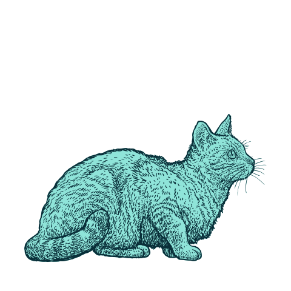
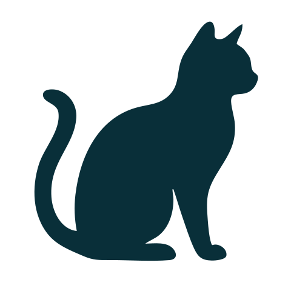
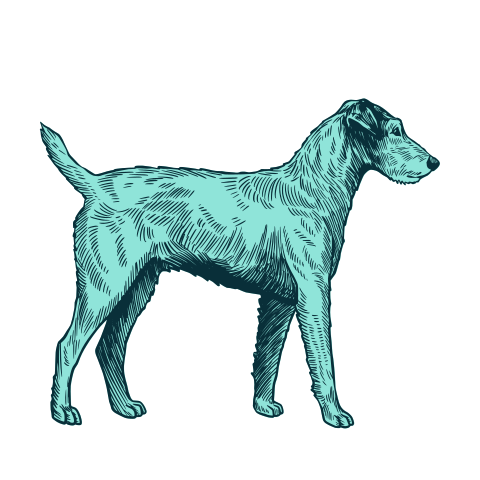
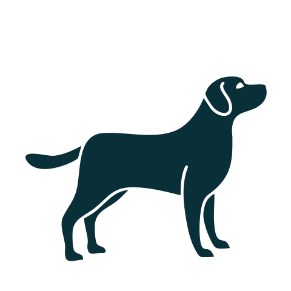

DNAture · Biblioteca gráfica
Una identidad para cada especie.
Grabados de un gato de pie y un golden retriever en tinta y menta. Siluetas de la colección original para usos pequeños. Cuatro SVG con fondo transparente.
Gato


Solo para gatos


Perro


Solo para perros